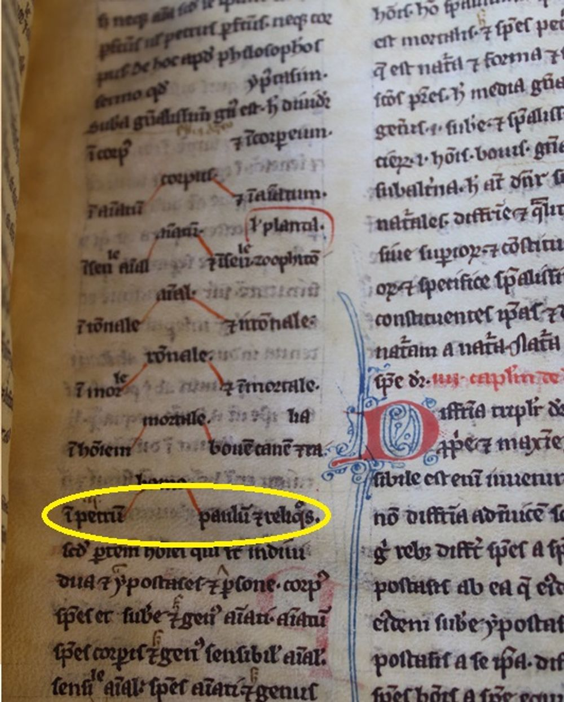

<figure class="aorCompManuscript" id="c_bnf165_37_r">
	<div id="img_bnf165_37_r" class="aorImgWindow">

		<div id="tab-content-316598f37r.jpg16598f37r.jpg" class="hcTabContent " onmousemove='zoom(event)'>

		<script type="text/javascript">
			document.addEventListener('DOMContentLoaded', function(){
				var el = document.getElementById('tab-content-316598f37r.jpg16598f37r.jpg');
				el.setAttribute('data-h', el.offsetHeight);
				el.setAttribute('data-w', el.offsetWidth);

				getMeta("16598f37r.jpg16598f37r.jpg");
				//getMeta("ol_16598f37r.jpg16598f37r.jpg");

				zoomImg('16598f37r.jpg16598f37r.jpg');
			});
		</script>


		<div class="aorZoom" id="zoom-tab-content-316598f37r.jpg16598f37r.jpg">
			<input type="image" src="images/icons/fullscreen.png"  onclick="viewfc('tab-content-316598f37r.jpg16598f37r.jpg')" />
		</div>

		

		<div class="zoomOverlay">
			
		</div>

		</div>

		<div id="tab-content-316598f37r2.jpg16598f37r2.jpg" class="hcTabContent " onmousemove='zoom(event)'>

		<script type="text/javascript">
			document.addEventListener('DOMContentLoaded', function(){
				var el = document.getElementById('tab-content-316598f37r2.jpg16598f37r2.jpg');
				el.setAttribute('data-h', el.offsetHeight);
				el.setAttribute('data-w', el.offsetWidth);

				getMeta("16598f37r2.jpg16598f37r2.jpg");
				//getMeta("ol_16598f37r2.jpg16598f37r2.jpg");

				zoomImg('16598f37r2.jpg16598f37r2.jpg');
			});
		</script>


		<div class="aorZoom" id="zoom-tab-content-316598f37r2.jpg16598f37r2.jpg">
			<input type="image" src="images/icons/fullscreen.png"  onclick="viewfc('tab-content-316598f37r2.jpg16598f37r2.jpg')" />
		</div>

		

		<div class="zoomOverlay">
			
		</div>

		</div>

	</div>


	<div class="aorFilioInfo">
		<div class="aorFolioToggles">
			<div class="aorFoliosTab" id="f_bnf165_37_r">
					<div class="aorFolioSections hcTabLabel" id="tab-list-16598f37r.jpg16598f37r.jpg">lat16598f37r</div>
					<div class="aorFolioSections hcTabLabel" id="tab-list-16598f37r2.jpg16598f37r2.jpg">lat16598f37r</div>
			</div>
			<div class="aorFoliosCaption">
					<figcaption id="tab-content-16598f37r.jpg16598f37r.jpg" class="hcTabContent">Paris, BnF, lat. 16598, f. 37r (detail, photo IO'D): A distinction is made here between mortal (and rational) man and mortal (but irrational) cows and dogs.</figcaption>
					<figcaption id="tab-content-16598f37r2.jpg16598f37r2.jpg" class="hcTabContent">Paris, BnF, lat. 16598, f. 37r (detail, photo IO'D)</figcaption>
			</div>

		</div>


		<div class="aorFoliosManuscript">
				<figcaption id="tab-content-216598f37r.jpg16598f37r.jpg" class="hcTabContent ">
				</figcaption>
				<figcaption id="tab-content-216598f37r2.jpg16598f37r2.jpg" class="hcTabContent ">
				</figcaption>

		</div>


	</div>


</figure>
